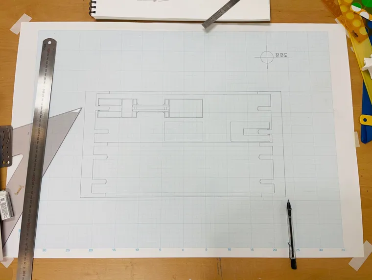

기초 제도 · 드로잉작품 보기선에서 공간으로
선긋기와 글자, 창호와 재료, 평면과 입면. 공간을 정확하게 표현하기 위한 기초 언어를 익혔습니다.
YEAR 01 / FOUNDATION
2021
선과 재료를 익히고, 기존 건축을 도면과 모형으로 읽었습니다. 이어 초도의 풍경과 사람들의 생활을 공중화장실 설계에 담았습니다.
2021 · 건축설계기초 01
기초 제도와 건축가 연구를 통해 건축의 표현 방식을 익힌 학기. 팀별 사례 분석과 도면·모형 제작을 함께 진행했습니다.
2021 · 건축설계기초 02
기존 화장실의 실측과 개선에서 출발해, 초도 답사와 대지 분석을 바탕으로 공중화장실을 설계했습니다.